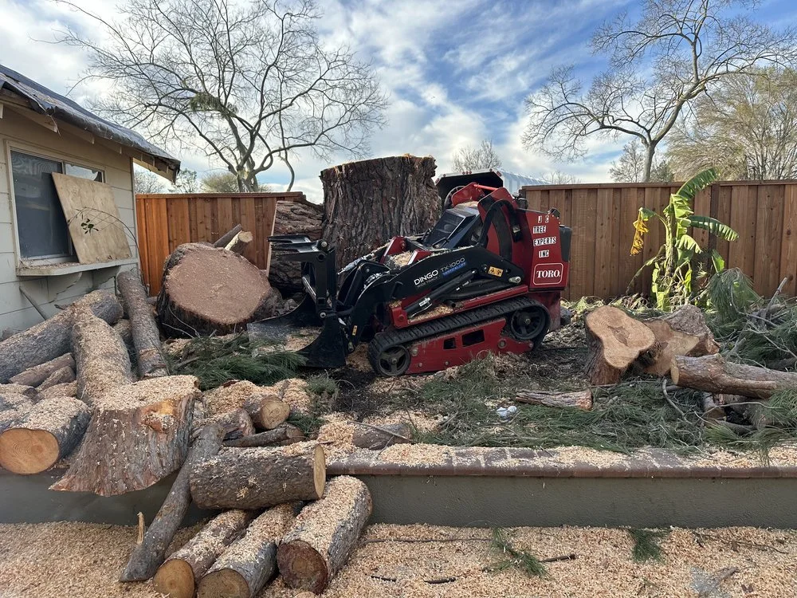

Whether you have a dead tree threatening your home, an overgrown tree blocking sunlight, or a hazardous tree that needs immediate attention — JC Tree Experts has the equipment, expertise, and ISA-certified knowledge to handle it safely.
We serve both residential homeowners and commercial property managers throughout the Bay Area. No job is too large or too complex for our team.
We work carefully around your landscaping, fences, pools, and structures. Our crews are trained to remove trees in tight spaces using precision rigging and spider crane equipment — no bulldozing your yard.
We understand that your business can't stop. We schedule commercial work to minimize disruption, and our crews work efficiently to complete the job on time. We handle HOA common areas, parking lots, commercial campuses, and more.

Emergency Tree Removal?
We respond to storm damage and urgent hazards. Call us directly at 408-858-6123.
Know the Warning Signs
Our free property evaluations look for these critical warning signs. Catching them early protects your property — and your liability.
Cracks in the trunk, major limbs, or bark are serious structural warning signs that can lead to sudden failure.
Fungal growth, soft wood, or hollow sections at the base or in the crown indicate internal decay that weakens the tree.
Trees growing into rooflines, foundations, or utility lines need assessment before they cause costly damage.
Bark beetles, borers, or carpenter ants can devastate a tree's structural integrity from the inside out.
Heavy one-sided growth or V-shaped codominant stems create unbalanced load distribution and splitting risk.
Dieback in the upper canopy, premature leaf drop, or bare branches out of season signal the tree is in serious decline.
How It Works
We visit your property, evaluate the tree, and provide a clear, no-pressure estimate with no hidden fees.
We plan the safest removal method, considering overhead lines, structures, and your landscaping.
Our crew uses precision cutting, rigging, and equipment to remove the tree safely and efficiently.
We haul away all debris, chip the wood (and offer you free mulch), and leave your property clean.
Storm damage, fallen trees, imminent hazards — we respond quickly when it matters most.
Call 408-858-6123 NowCommon Questions
Tree removal costs vary based on size, location, and access. Small trees typically cost $300–$600, medium trees $600–$1,500, and large or hazardous trees can range from $1,500–$3,000+. We offer free, no-obligation estimates — call 408-858-6123 or fill out our contact form.
Yes. We respond to storm damage, fallen trees, and urgent hazards. Call us directly at 408-858-6123 for emergency service throughout San Jose and the South Bay Area.
Yes. JC Tree Experts holds CSLB License #1057201, is fully bonded and insured, and our lead arborist Javier Castaneda Jr. holds ISA Certified Arborist credential #WE-10110A. We carry full liability and workers' comp insurance.
Tree removal and stump grinding are typically separate services. We can grind the stump at the time of removal or return at a later date. Ask about our stump grinding add-on when you request your free estimate.
We haul away all debris and chip the wood on site. We offer free wood chips and mulch from your removed tree to local residents — great for garden beds and landscaping. Ask about free mulch delivery when you call.
Most residential tree removals are completed in half a day to a full day, depending on tree size and complexity. Large or multi-tree jobs may take longer. We'll give you a detailed time estimate during your free property assessment.